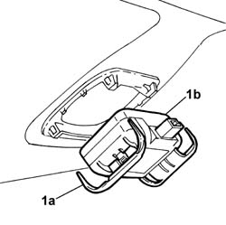

5050B64 rain sensor electronic unit r r
- Path
- Procedures > 50 auxiliary units > 5050 screen washers and headlamp wash/wipe > 5050B WINDSCREEN WASH/WIPE > 5050B64 rain sensor electronic unit r r
- Kind
- repair procedure (removal / refitting; the operation number is the code)
- Applies to
- all engines; all production periods
- Interactive page
- https://sloeber94.github.io/elrnDB-lThss/en/#/79298
Applies to: all engines; all production periods
 Removing
Removing
 Refitting
Refitting- Disconnect the negative battery terminal.
See in Op. 7065C68 INTERIOR REAR VIEW MIRROR - R.R.
- Remove the sensor (1b) working on the tabs (1a).

Applies to: all engines; all production periods
Refitting
Removing- Place the sensor in the housing and secure it using the retaining tabs.
See in Op. 7065C68 INTERIOR REAR VIEW MIRROR - R.R.
- Connect the negative battery terminal.